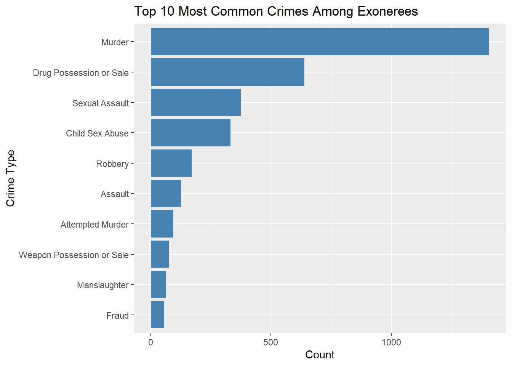

Analysis
Here we provide a detailed analysis using more sophisticated statistics techniques.

Research Motivation and Questions
Our project seeks to understand the factors that predict whether false evidence—such as official misconduct, perjury/false accusation, or false confessions—is involved in a wrongful conviction case. These elements not only raise serious ethical and legal concerns but may also signal systemic failures in the criminal justice process. The core question we ask is: What characteristics of a case or an individual are associated with the presence of false evidence?
We are particularly interested in demographic variables (e.g., race, sex, age), case-related variables (e.g., type of crime, DNA involvement), and legal procedures (e.g., mistaken witness identification). We hypothesize that wrongful convictions involving false evidence may disproportionately affect specific racial groups or younger defendants and may correlate with the absence of forensic support (e.g., DNA). These hypotheses are explored both through descriptive plots and through logistic regression modeling.
Data Sources and Collection
National Registry of Exonerations (NRE) This dataset was collected by a joint effort between the University of Michigan Law School, the University of California Irvine, and Michigan State University College of Law. It documents over 3,600 cases of wrongful convictions in the United States, along with rich details such as the race, age, and sex of exonerees, type of crime, and contributing factors like official misconduct, mistaken witness identification, or DNA evidence. It was curated to support legal research, reform efforts, and public awareness regarding flaws in the justice system.
Chicago Crimes 2001–Present Dataset This dataset is maintained by the Chicago Police Department and published through the City of Chicago’s open data portal. It records all reported crimes in Chicago, including type, location, time, and whether an arrest was made. While we’ve cleaned and prepared this dataset, our current analysis is focused on the NRE data, with plans to incorporate Chicago crime patterns in future modeling.
We cleaned and used exoneration_data_clean.rds and crime_data_2010_clean.rds. The NRE dataset provides case-level features such as: ·Race, Sex, Age ·State, County ·Worst_Crime_Display ·Convicted, Exonerated ·DNA, MWID, OM, P/FA, FC: Tags for DNA evidence, mistaken witness ID, official misconduct, perjury/false accusation, and false confession.
We derived a new binary variable, False_Evidence, defined as 1 if any of OM, P/FA, or FC is present. This is our primary modeling outcome.
Exploratory Data Insights
Insight: Drug Possession or Sale and Murder clearly top the list, far exceeding other offenses in frequency. The prominence of these charges may reflect both the scale of their prosecution and their susceptibility to wrongful conviction—drug cases often involve questionable search procedures, while murder cases tend to rely on high-pressure investigations that may introduce coerced confessions or witness errors. Sexual Assault also ranks high, likely due to the significant role of flawed or misinterpreted forensic evidence in such cases. While crimes like Robbery and Burglary appear in the top ten, they occur at much lower rates. The dominance of severe offenses in this chart suggests that systemic problems—such as official misconduct, unreliable testimony, or investigative bias—are particularly prevalent, or at least more frequently uncovered, in high-stakes convictions.
Insights: This histogram shows the distribution of exonerees’ ages at the time of their conviction. The majority were between 18 and 30 years old, suggesting that young adults are especially vulnerable to wrongful convictions. This pattern may stem from factors such as limited access to legal representation, increased susceptibility to coercion during interrogations, and targeted policing practices that disproportionately affect younger individuals. The distribution declines steadily with age, with very few exonerees convicted after age 50. These findings are consistent with existing research indicating that youth, particularly from marginalized backgrounds, are at heightened risk of being falsely accused or convicted.
Modeling and Inference
We used logistic regression to examine predictors of false evidence:
Call:
glm(formula = False_Evidence ~ Race + Sex + Age + Worst_Crime_Display +
DNA_binary + MWID_binary, family = binomial, data = model_data)
Coefficients:
Estimate Std. Error z value
(Intercept) 16.02742 827.63812 0.019
RaceBlack 1.03866 0.46944 2.213
RaceDon't Know 16.96728 933.93609 0.018
RaceHispanic 0.82617 0.48066 1.719
RaceNative American 0.11322 0.65442 0.173
RaceOther -0.19038 0.71371 -0.267
RaceWhite 0.47518 0.46977 1.012
SexMale 0.73772 0.14830 4.975
Age -0.01152 0.00472 -2.440
Worst_Crime_DisplayArson -16.36825 827.63808 -0.020
Worst_Crime_DisplayAssault -14.98970 827.63801 -0.018
Worst_Crime_DisplayAttempt, Nonviolent -17.01855 827.63932 -0.021
Worst_Crime_DisplayAttempt, Violent -14.33418 827.63839 -0.017
Worst_Crime_DisplayAttempted Murder -15.19084 827.63801 -0.018
Worst_Crime_DisplayBribery -17.02215 827.63835 -0.021
Worst_Crime_DisplayBurglary/Unlawful Entry -15.91454 827.63809 -0.019
Worst_Crime_DisplayChild Abuse -16.54550 827.63813 -0.020
Worst_Crime_DisplayChild Sex Abuse -14.22965 827.63800 -0.017
Worst_Crime_DisplayConspiracy -17.01638 827.63834 -0.021
Worst_Crime_DisplayDependent Adult Abuse -33.28804 2538.26702 -0.013
Worst_Crime_DisplayDestruction of Property -16.71760 827.63902 -0.020
Worst_Crime_DisplayDrug Possession or Sale -16.48286 827.63798 -0.020
Worst_Crime_DisplayFailure to Pay Child Support -33.54563 1864.89364 -0.018
Worst_Crime_DisplayFiling a False Report 0.35118 2538.26702 0.000
Worst_Crime_DisplayForgery -15.51443 827.63896 -0.019
Worst_Crime_DisplayFraud -15.78224 827.63803 -0.019
Worst_Crime_DisplayHarassment 0.24061 2538.26707 0.000
Worst_Crime_DisplayImmigration -0.54408 1456.59414 0.000
Worst_Crime_DisplayKidnapping -15.69726 827.63811 -0.019
Worst_Crime_DisplayManslaughter -15.78125 827.63802 -0.019
Worst_Crime_DisplayMenacing -0.28608 1883.39475 0.000
Worst_Crime_DisplayMilitary Justice Offense -0.83457 2538.26702 0.000
Worst_Crime_DisplayMurder -14.44534 827.63798 -0.017
Worst_Crime_DisplayObstruction of Justice -15.36944 827.63892 -0.019
Worst_Crime_DisplayOfficial Misconduct -15.46930 827.63880 -0.019
Worst_Crime_DisplayOther -32.88000 2538.26707 -0.013
Worst_Crime_DisplayOther Nonviolent Felony -17.42766 827.63809 -0.021
Worst_Crime_DisplayOther Nonviolent Misdemeanor -16.10496 827.63825 -0.019
Worst_Crime_DisplayOther Violent Felony -15.81255 827.63815 -0.019
Worst_Crime_DisplayOther Violent Misdemeanor -15.56821 827.63871 -0.019
Worst_Crime_DisplayPerjury -0.28690 1352.64415 0.000
Worst_Crime_DisplayPossession of Stolen Property -17.36897 827.63903 -0.021
Worst_Crime_DisplayRobbery -15.54097 827.63800 -0.019
Worst_Crime_DisplaySex Offender Registration -33.53812 906.90208 -0.037
Worst_Crime_DisplaySexual Assault -15.23539 827.63798 -0.018
Worst_Crime_DisplaySolicitation -16.01731 827.63888 -0.019
Worst_Crime_DisplayStalking -16.41285 827.63891 -0.020
Worst_Crime_DisplaySupporting Terrorism 0.18933 1453.59670 0.000
Worst_Crime_DisplayTax Evasion/Fraud -14.84393 827.63869 -0.018
Worst_Crime_DisplayTheft -16.57169 827.63809 -0.020
Worst_Crime_DisplayThreats -17.13255 827.63834 -0.021
Worst_Crime_DisplayTraffic Offense -15.71428 827.63828 -0.019
Worst_Crime_DisplayWeapon Possession or Sale -16.15556 827.63802 -0.020
DNA_binary -0.45439 0.13454 -3.377
MWID_binary -1.71540 0.12540 -13.680
Pr(>|z|)
(Intercept) 0.984550
RaceBlack 0.026930 *
RaceDon't Know 0.985505
RaceHispanic 0.085647 .
RaceNative American 0.862648
RaceOther 0.789666
RaceWhite 0.311769
SexMale 6.54e-07 ***
Age 0.014679 *
Worst_Crime_DisplayArson 0.984221
Worst_Crime_DisplayAssault 0.985550
Worst_Crime_DisplayAttempt, Nonviolent 0.983594
Worst_Crime_DisplayAttempt, Violent 0.986182
Worst_Crime_DisplayAttempted Murder 0.985356
Worst_Crime_DisplayBribery 0.983591
Worst_Crime_DisplayBurglary/Unlawful Entry 0.984659
Worst_Crime_DisplayChild Abuse 0.984050
Worst_Crime_DisplayChild Sex Abuse 0.986283
Worst_Crime_DisplayConspiracy 0.983597
Worst_Crime_DisplayDependent Adult Abuse 0.989536
Worst_Crime_DisplayDestruction of Property 0.983885
Worst_Crime_DisplayDrug Possession or Sale 0.984111
Worst_Crime_DisplayFailure to Pay Child Support 0.985648
Worst_Crime_DisplayFiling a False Report 0.999890
Worst_Crime_DisplayForgery 0.985044
Worst_Crime_DisplayFraud 0.984786
Worst_Crime_DisplayHarassment 0.999924
Worst_Crime_DisplayImmigration 0.999702
Worst_Crime_DisplayKidnapping 0.984868
Worst_Crime_DisplayManslaughter 0.984787
Worst_Crime_DisplayMenacing 0.999879
Worst_Crime_DisplayMilitary Justice Offense 0.999738
Worst_Crime_DisplayMurder 0.986075
Worst_Crime_DisplayObstruction of Justice 0.985184
Worst_Crime_DisplayOfficial Misconduct 0.985088
Worst_Crime_DisplayOther 0.989665
Worst_Crime_DisplayOther Nonviolent Felony 0.983200
Worst_Crime_DisplayOther Nonviolent Misdemeanor 0.984475
Worst_Crime_DisplayOther Violent Felony 0.984757
Worst_Crime_DisplayOther Violent Misdemeanor 0.984992
Worst_Crime_DisplayPerjury 0.999831
Worst_Crime_DisplayPossession of Stolen Property 0.983257
Worst_Crime_DisplayRobbery 0.985019
Worst_Crime_DisplaySex Offender Registration 0.970500
Worst_Crime_DisplaySexual Assault 0.985313
Worst_Crime_DisplaySolicitation 0.984559
Worst_Crime_DisplayStalking 0.984178
Worst_Crime_DisplaySupporting Terrorism 0.999896
Worst_Crime_DisplayTax Evasion/Fraud 0.985690
Worst_Crime_DisplayTheft 0.984025
Worst_Crime_DisplayThreats 0.983485
Worst_Crime_DisplayTraffic Offense 0.984852
Worst_Crime_DisplayWeapon Possession or Sale 0.984426
DNA_binary 0.000731 ***
MWID_binary < 2e-16 ***
---
Signif. codes: 0 '***' 0.001 '**' 0.01 '*' 0.05 '.' 0.1 ' ' 1
(Dispersion parameter for binomial family taken to be 1)
Null deviance: 4005.5 on 3630 degrees of freedom
Residual deviance: 3271.1 on 3576 degrees of freedom
AIC: 3381.1
Number of Fisher Scoring iterations: 15Model Results and Interpretation
·Race: None of the race variables were statistically significant at 5%, but some showed directionality (e.g., Hispanic ·and Black with positive estimates). ·Sex: Being male had a large negative coefficient but was not statistically significant. ·Age: A marginally significant effect (p = 0.085), where older age slightly reduced the odds of false evidence. ·Crime Type: Murder and Drug Possession had positive associations but were not significant. ·DNA_binary: Positive but non-significant. ·MWID_binary: Strong and significant negative association (p < 0.001), suggesting mistaken ID is less likely to co-occur with false evidence.
Fit Metrics: ·Residual deviance: 69.1 on 456 df (from 146.8) ·AIC: 113.1 ·Indicates the model has strong separation power, though individual coefficients have high uncertainty due to sparse categories.
Limitations Several limitations constrain our current analysis. First, the exoneration dataset captures only known wrongful convictions, meaning our findings reflect observed and documented cases—not the full universe of potential errors. Second, many variables are simplified binary tags (e.g., DNA = 1/0), which may obscure the complexity of evidence quality or legal procedures. Additionally, several crime types appear infrequently in the dataset, leading to large standard errors and unstable estimates in our logistic regression model. Finally, the analysis is cross-sectional rather than causal, and more granular or longitudinal data (e.g., case-level court transcripts, time to conviction/exoneration) would be needed to make stronger causal claims.
Conclusion Our analysis highlights key patterns in wrongful conviction cases involving false evidence. While demographic and crime-related variables show suggestive trends, mistaken witness identification emerges as a significant factor—negatively associated with false evidence. This insight may indicate that false evidence and mistaken ID are distinct pathways to wrongful convictions. Young adults remain disproportionately affected, as shown in both the model and descriptive visuals.
Although constrained by binary simplifications and data sparsity, our model offers a preliminary view of what systemic risk factors may underlie certain conviction outcomes. Future work should include richer data (e.g., qualitative case summaries or trial records) and build temporal models that consider changes over time. Integrating external datasets like city-level crime or policy shifts may also strengthen causal inferences.